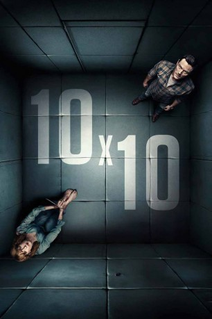

#9928 '10x10
 
 IMDB-Wertung: 4.9 / 10
IMDB-Wertung: 4.9 / 10  Metascore: 0
Metascore: 0 
Monatelang hat Lewis Cathy beobachtet. Jetzt schlägt er zu. Auf einem Parkplatz fesselt er sie und wirft sie wie ein Paket in seinen Kofferraum. Zuhause steckt er sie in einen schalldichten Raum und beginnt sie zu verhören. Er fragt sie nach ihrer Familie, ihrer Kindheit, ihrem Beruf und immer wieder nach ihrem Namen. Er scheint eine Menge über Cathy zu wissen, doch ihre Antworten machen ihn nur noch wütender. Zwischen Kidnapper und Opfer beginnt ein atemloses Duell das die Situation bis zum Zerreißen anspannt …
Jahr: 2018
Dauer: 86 Minuten
FSK:
Land: England Studio: Ascot Elite Entertainment GroupTonspuren: DTS - ,
Untertitel: Deutsch,
Auflösung: 1080p (1920x720) Größe: 5826 MB
Genre: Thriller
Regisseur: Suzi Ewing
Drehbuch: Noel Clarke, Suzi Ewing
Soundtrack: Christopher Holmes
Darsteller:
 Luke Evans als Lewis
Luke Evans als Lewis Kelly Reilly als Cathy
Kelly Reilly als Cathy Noel Clarke als Dennis
Noel Clarke als Dennis- Jason Maza als Officer Wayland
- Olivia Chenery als Alana
- Jill Winternitz als Jen
- Benjamin Hoetjes als Casey
- Skye Lucia Degruttola als Summer
 Ruby Bustamante als Teenager
Ruby Bustamante als Teenager- Stacy Hall als Officer Gray
- Miles Webb als Teenager
- Jerry Brown als Grocery Store Customer
- Hilary Agostini als Yoga / gym client
- Keila J. Brown als Sharon
- John Michael Morris als Paul (husband)
- Mike Kelson als Policeman
- Norma Dixit als Alondra
- Christian Meier als Jarrod
- Kevin Matadeen als Yoga Client
- Jackson Kai als Yoga
- Donovan Elmore als Boy in Cafe
- Jessica Young als Lady In The Shower
Datei: X:\2018(A-F)\'10x10 (2018, FSK, 1920x720).mkv seit 14.11.2018
Festplatte: HD 2017(A-Z)-2018(A-F)
 Es gibt insgesamt 151 Filme in der Gruppe '2018(A-F)'
Es gibt insgesamt 151 Filme in der Gruppe '2018(A-F)'